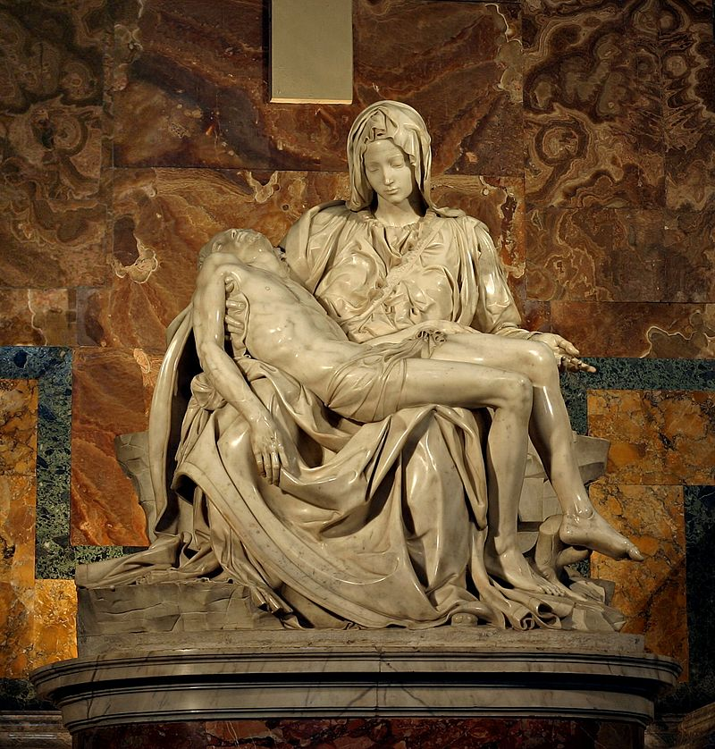

Творби

1.

2.

3.

4.
Микеланджело Буонароти
1475 - 1564
Микеланджело ди Лудовико Буонароти Симони, известен още само като Микеланджело, е италиански ренесансов скулптор, художник, поет и архитект, представител на Флорентинската школа. Смятан е за един от тримата титани на Ренесансовото изкуство заедно с Леонардо да Винчи и Рафаело. Творчеството на Микеланджело се отличава с патос и непрекъснато търсене на идеала за красота като отражение на идеалите на епохата за физическа и духовна мощ и трагизъм. То оказва силно влияние върху Тициан и венецианската живопис и се смята за основа на стила маниеризъм.